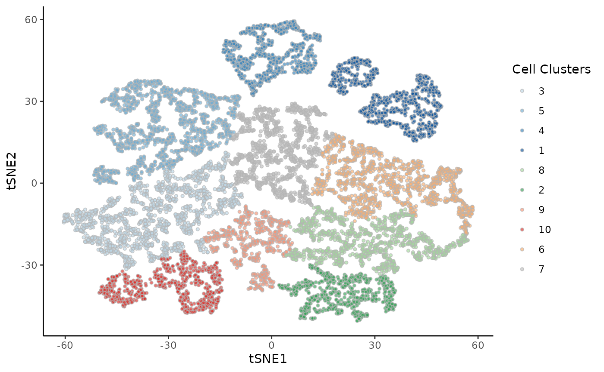
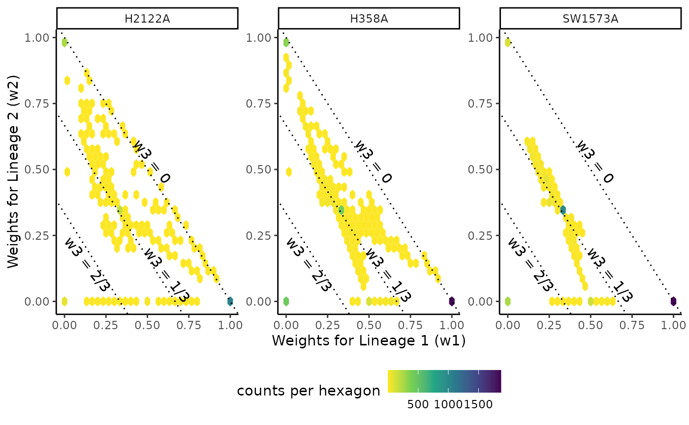

KRAS.RmdThe dataset we will be working with concerns a single-cell RNA-sequencing dataset consisting of three cancer models under a KRAS(G12C) inhibition (Xue et al. 2020). Those types of molecules are currently in early-phase clinical trials and a large group of lung adenocarcinoma seem to be able to at least partially evade those treatments. The authors of the original study therefore look at the impact of KRAS(G12C) inhibitors on three models of tumors and show that cells evolve along three lineages.
While the authors used the three models to validate their results, we can also look for differences between the three types. We therefore have a three-lineages trajectory, with three conditions (i.e. the three models).
We will use this dataset as an example of how to perform the first two steps of the condiments workflow under this setting. + We first check if we can fit a single trajectory, which we call differential topology. + We then look for large-scale changes, indicative of differential progression and differential differentiation.
libs <- c("here", "dplyr", "tradeSeq", "SingleCellExperiment", "slingshot",
"condiments", "scater", "RColorBrewer", "pheatmap", "cowplot",
"tidyr", "ggplot2")
suppressMessages(
suppressWarnings(sapply(libs, require, character.only = TRUE))
)## here dplyr tradeSeq
## FALSE TRUE TRUE
## SingleCellExperiment slingshot condiments
## TRUE TRUE TRUE
## scater RColorBrewer pheatmap
## FALSE TRUE TRUE
## cowplot tidyr ggplot2
## TRUE TRUE TRUE
rm(libs)
theme_set(theme_classic())
kras <- bioc2021trajectories::import_KRAS()
kras <- kras[1:100, ]We rely on normalization conducted in the original paper, and will used the reduced dimension coordinates that are available. We provide a function to access both the raw counts, the reduced dimension coordinates and other cell-level info. Since we will not be performing differential expression, we do not need to retain the genes and we only keep a lightweight version of the object.
data("kras", package = "bioc2021trajectories")
kras## class: SingleCellExperiment
## dim: 100 10177
## metadata(0):
## assays(1): counts
## rownames(100): NOC2L HES4 ... MECR PUM1
## rowData names(20): ensembl gene_short_name ... br.qval br.qval.72
## colnames(10177): H358_A_AAACATACATAAGG H358_A_AAACATACATACCG ...
## SW1573_D_TTTAGAGATCAGAC SW1573_D_TTTCGAACTTCTGT
## colData names(98): nGene nUMI ... slingshot cells
## reducedDimNames(1): TSNE
## mainExpName: NULL
## altExpNames(0):We can visualize all the single cells in a shared reduced dimensional space, according to the tumor model or the clusters from the original publication.
cols <- c(brewer.pal(5, "Blues")[2:5],
brewer.pal(3, "Greens")[2:3],
brewer.pal(3, "Reds")[2:3],
brewer.pal(3, "Oranges")[2], "Grey")
names(cols) <- c(3, 5, 4, 1, 8, 2, 9, 10, 6, 7)
df <- colData(kras)[, -97] %>% as.data.frame() %>%
sample_frac(1)
ggplot(df, aes(x = tSNE1, y = tSNE2, col = Batch)) +
geom_point(size = .7) +
scale_color_brewer(palette = "Accent") +
labs(col = "Type")
ggplot(df, aes(x = tSNE1, y = tSNE2, fill = Cluster)) +
geom_point(size = 1, alpha = .65, col = "grey70", shape = 21) +
scale_fill_manual(values = cols) +
labs(fill = "Cell Clusters")
The first question we ask is whether we can fit a common trajectory. If the differences between the models are limited, then a common trajectory is possible. If there are large changes, then it is better to fit one trajectory per tumor model. In that latter case, depending on the scale of those changes, it may still be possible to reconcile the trajectories manually.
To assess this, we first use a visual tool called the imbalance_score
kras <- imbalance_score(Object = kras, conditions = "Batch", dimred = "TSNE")
df$scores <- kras[, df$cells]$scores$scaled_scores
ggplot(df, aes(x = tSNE1, y = tSNE2, col = scores)) +
geom_point(size = .7) +
scale_color_viridis_c(option = "C") +
labs(col = "Score")There are some clear regions of imbalance (especially in cluster 10), although overall the three conditions are well mixed.
To assess whether a common trajectory can be fitted in a more quantitative manner, we will rely on the topologyTest. To do this, we fit a common trajectory (under the null) which will serve as a guide for condition-level trajectories. To estimate the trajectory, we use slingshot (Street et al. 2018).
kras <- slingshot(kras, reducedDim = "TSNE", clusterLabels = kras$Cluster,
start.clus = 7, extend = "n", reweight = FALSE, reassign = FALSE)
mst <- slingMST(kras, as.df = TRUE)
ggplot(df, aes(x = tSNE1, y = tSNE2)) +
geom_point(size = 1, alpha = .65, col = "grey70", shape = 21,
aes(fill = Cluster)) +
scale_fill_manual(values = cols) +
labs(fill = "Cell Clusters") +
geom_point(size = 3, data = mst) +
geom_path(size = 1.5, data = mst, aes(group = Lineage))The skeleton of the trajectory is this tree structure, that tracks changes, consistently with the original publication. The topologyTest utilizes this tree structure when fitting curves to the cells of each conditions, as well as random sets of the data, and compare whether the two distributions are similar.
set.seed(23)
topologyTest(kras, conditions = "Batch", rep = 50)## Generating permuted trajectories## Running Classifier test## Loading required package: lattice## method thresh statistic p.value
## 1 Classifier 0.01 0.9181035 0Here, we clearly reject the topologyTest: we should fit a separate trajectory per condition.
We therefore fit one trajectory per tumor model, or batch, using the slingshot_conditions function.
sdss <- slingshot_conditions(kras, kras$Batch, approx_points = FALSE,
extend = "n", reweight = FALSE, reassign = FALSE)We can plot the skeleton of each trajectory. They are clearly very similar and we can visually map the trajectories: the lineages map well onto one another.
msts <- lapply(sdss, slingMST, as.df = TRUE) %>%
bind_rows(.id = "Batch") %>%
arrange(Batch)
ggplot(df, aes(x = tSNE1, y = tSNE2, col = Batch)) +
geom_point(size = .7, alpha = .1) +
scale_color_brewer(palette = "Accent") +
geom_point(data = msts, size = 3) +
geom_path(data = msts, aes(group = interaction(Lineage, Batch)),
size = 2)Similarly with the curves, we see that the three lineages of each trajectory map to one another across conditions.
lineages <- lapply(sdss, slingCurves, as.df = TRUE) %>%
bind_rows(.id = "Batch") %>%
arrange(Order)
position <- data.frame(
"tSNE1" = c(40, -30, 45),
"tSNE2" = c(50, -50, -50),
"Batch" = "H2122A",
"text" = paste0("Lineage ", 1:3)
)
ggplot(df, aes(x = tSNE1, y = tSNE2, col = Batch)) +
geom_point(size = .7, alpha = .2) +
scale_color_brewer(palette = "Accent") +
geom_path(data = lineages, size = 1.5, aes(group = interaction(Lineage, Batch))) +
geom_text(data = position, col = "black", aes(label = text), size = 5)Although we have fitted a different trajectory per condition, we can therefore proceed to step 2 and look at differential progression and differentiation, by manually mapping the trajectories.
## [,1] [,2] [,3]
## [1,] 1 1 1
## [2,] 2 2 2
## [3,] 3 3 3
sds <- merge_sds(sdss[[1]], sdss[[2]], sdss[[3]],
condition_id = names(sdss), mapping = mapping)Similarly to the TGFB dataset, we can look at large-scale differences between conditions. Specifically, we want to see if the pseudotime distributions are similar across conditions.
df <- full_join(
df %>%
select(cells, tSNE1, tSNE2, Cluster, Batch),
slingPseudotime(sds) %>%
as.data.frame() %>%
mutate(cells = rownames(.))
) %>%
pivot_longer(starts_with("Lineage"), names_to = "Curve", values_to = "pst")## Joining, by = "cells"
ggplot(df, aes(x = pst)) +
geom_density(alpha = .4, aes(fill = Batch), col = "transparent") +
geom_density(aes(col = Batch), fill = "transparent", size = 1.5) +
guides(col = FALSE) +
scale_fill_brewer(palette = "Accent") +
scale_color_brewer(palette = "Accent") +
labs(x = "Pseudotime", fill = "Type") +
facet_wrap(~ Curve, scales = "free_x")## Warning: Removed 13000 rows containing non-finite values (stat_density).
## Warning: Removed 13000 rows containing non-finite values (stat_density).Visually, we can see three phenomenons:
We can also test this in a more principled manner using the progressionTest. Since we have three conditions, we perform a classifier test (see (Lopez-Paz and Oquab 2016)). By setting lineages=TRUE, we perform the test for individual lineages and for the full trajectory.
The test statistic reflects the accuracy of the classifier on a balanced test data, so under the null, the expected value is \(1/3\).
progressionTest(sds, conditions = kras$Batch, lineages = TRUE)## lineage statistic p.value
## 1 All 0.8296334 0.000000e+00
## 2 1 0.5089786 2.355639e-43
## 3 2 0.4859742 2.520532e-15
## 4 3 0.4549123 1.840264e-11Each cell in a trajectory is characterized with two components: its pseudotime values in each lineage, and its weights with regard to each lineage. Differential progression looks at the distribution of pseudotime between conditions while differential differentiation looks at the distribution of weights values between conditions.
It is slightly harder to interpret bu we can start with a few plots.
df <- bioc2021trajectories::sling_reassign(sds) %>%
as.data.frame() %>%
mutate(cells = rownames(.)) %>%
dplyr::rename("Lineage1" = V1, "Lineage2" = V2, "Lineage3" = V3) %>%
pivot_longer(starts_with("Lineage"), names_to = "Curve", values_to = "weights") %>%
full_join(df) %>%
group_by(cells) %>%
select(-pst) %>%
mutate(weights = weights / sum(weights)) %>%
ungroup()## Setting options('download.file.method.GEOquery'='auto')## Setting options('GEOquery.inmemory.gpl'=FALSE)## Joining, by = c("cells", "Curve")We can first look at the total weight of each lineage in each condition. Two clear conclusions can be drawn here: + Lineage 1, the longest lineage, indeed captures more cells in all lineages + There are fewer H2122A cells in lineage 2, compared to the other conditions.
ggplot(df %>% group_by(Batch, Curve) %>%
summarise(weights = mean(weights), .groups = NULL),
aes(x = Curve, fill = Batch, y = weights)) +
geom_col(position = "dodge") +
scale_fill_brewer(palette = "Accent") +
theme(legend.position = c(.7, .7)) +
labs(x = "", y = "Mean weight")## `summarise()` has grouped output by 'Batch'. You can override using the `.groups` argument.
ggplot(df %>% pivot_wider(names_from = "Curve", values_from = "weights"),
aes(x = Lineage1, y = Lineage3)) +
geom_hex() +
scale_fill_viridis_c(direction = -1) +
facet_wrap(~Batch, scales = "free") +
geom_abline(slope = -1, intercept = 1, linetype = "dotted") +
geom_abline(slope = -1, intercept = 2/3, linetype = "dotted") +
geom_abline(slope = -1, intercept = 1/3, linetype = "dotted") +
annotate("text", x = .53, y = .53, label = "w3 = 0", angle = -52) +
annotate("text", x = .62, y = .1, label = "w3 = 1/3", angle = -52) +
annotate("text", x = .14, y = .14, label = "w3 = 2/3", angle = -52) +
theme(legend.position = "bottom") +
labs(x = "Weights for Lineage 1 (w1)", y = "Weights for Lineage 2 (w2)",
fill = "counts per hexagon")
differentiationTest(sds, conditions = kras$Batch, pairwise = TRUE)## note: only 1 unique complexity parameters in default grid. Truncating the grid to 1 .
##
## note: only 1 unique complexity parameters in default grid. Truncating the grid to 1 .
##
## note: only 1 unique complexity parameters in default grid. Truncating the grid to 1 .
##
## note: only 2 unique complexity parameters in default grid. Truncating the grid to 2 .## pair statistic p.value
## 1 All 0.4900000 8.231091e-42
## 2 1vs2 0.4210231 6.586841e-13
## 3 1vs3 0.4042857 5.557279e-10
## 4 2vs3 0.4793883 9.359587e-18## R version 4.1.0 (2021-05-18)
## Platform: x86_64-pc-linux-gnu (64-bit)
## Running under: Ubuntu 20.04.2 LTS
##
## Matrix products: default
## BLAS/LAPACK: /usr/lib/x86_64-linux-gnu/openblas-pthread/libopenblasp-r0.3.8.so
##
## locale:
## [1] LC_CTYPE=en_US.UTF-8 LC_NUMERIC=C
## [3] LC_TIME=en_US.UTF-8 LC_COLLATE=en_US.UTF-8
## [5] LC_MONETARY=en_US.UTF-8 LC_MESSAGES=C
## [7] LC_PAPER=en_US.UTF-8 LC_NAME=C
## [9] LC_ADDRESS=C LC_TELEPHONE=C
## [11] LC_MEASUREMENT=en_US.UTF-8 LC_IDENTIFICATION=C
##
## attached base packages:
## [1] parallel stats4 stats graphics grDevices utils datasets
## [8] methods base
##
## other attached packages:
## [1] caret_6.0-88 lattice_0.20-44
## [3] ggplot2_3.3.3 tidyr_1.1.3
## [5] cowplot_1.1.1 pheatmap_1.0.12
## [7] RColorBrewer_1.1-2 condiments_1.1.02
## [9] slingshot_2.1.0 TrajectoryUtils_1.1.0
## [11] princurve_2.1.6 SingleCellExperiment_1.15.1
## [13] SummarizedExperiment_1.23.0 Biobase_2.53.0
## [15] GenomicRanges_1.45.0 GenomeInfoDb_1.29.0
## [17] IRanges_2.27.0 S4Vectors_0.31.0
## [19] BiocGenerics_0.39.0 MatrixGenerics_1.5.0
## [21] matrixStats_0.59.0 tradeSeq_1.7.01
## [23] dplyr_1.0.6
##
## loaded via a namespace (and not attached):
## [1] utf8_1.2.1 R.utils_2.10.1
## [3] tidyselect_1.1.1 grid_4.1.0
## [5] combinat_0.0-8 docopt_0.7.1
## [7] BiocParallel_1.27.0 Rtsne_0.15
## [9] bioc2021trajectories_0.0.2 pROC_1.17.0.1
## [11] DropletUtils_1.13.0 munsell_0.5.0
## [13] codetools_0.2-18 ragg_1.1.2
## [15] withr_2.4.2 colorspace_2.0-1
## [17] fastICA_1.2-2 highr_0.9
## [19] knitr_1.33 tensor_1.5
## [21] labeling_0.4.2 slam_0.1-48
## [23] GenomeInfoDbData_1.2.6 polyclip_1.10-0
## [25] farver_2.1.0 rhdf5_2.37.0
## [27] rprojroot_2.0.2 vctrs_0.3.8
## [29] generics_0.1.0 ipred_0.9-11
## [31] xfun_0.23 Ecume_0.9.1
## [33] randomForest_4.6-14 R6_2.5.0
## [35] VGAM_1.1-5 locfit_1.5-9.4
## [37] bitops_1.0-7 rhdf5filters_1.5.0
## [39] spatstat.utils_2.1-0 cachem_1.0.5
## [41] DelayedArray_0.19.0 scales_1.1.1
## [43] nnet_7.3-16 gtable_0.3.0
## [45] beachmat_2.9.0 goftest_1.2-2
## [47] timeDate_3043.102 rlang_0.4.11
## [49] systemfonts_1.0.2 splines_4.1.0
## [51] ModelMetrics_1.2.2.2 GEOquery_2.61.0
## [53] hexbin_1.28.2 spatstat.geom_2.1-0
## [55] yaml_2.2.1 reshape2_1.4.4
## [57] abind_1.4-5 tools_4.1.0
## [59] lava_1.6.9 ellipsis_0.3.2
## [61] spatstat.core_2.1-2 proxy_0.4-25
## [63] Rcpp_1.0.6 plyr_1.8.6
## [65] sparseMatrixStats_1.5.0 zlibbioc_1.39.0
## [67] purrr_0.3.4 RCurl_1.98-1.3
## [69] densityClust_0.3 rpart_4.1-15
## [71] deldir_0.2-10 pbapply_1.4-3
## [73] viridis_0.6.1 ggrepel_0.9.1
## [75] cluster_2.1.2 fs_1.5.0
## [77] magrittr_2.0.1 data.table_1.14.0
## [79] openxlsx_4.2.3 RANN_2.6.1
## [81] hms_1.1.0 evaluate_0.14
## [83] sparsesvd_0.2 gridExtra_2.3
## [85] HSMMSingleCell_1.13.0 compiler_4.1.0
## [87] transport_0.12-2 tibble_3.1.2
## [89] crayon_1.4.1 R.oo_1.24.0
## [91] htmltools_0.5.1.1 mgcv_1.8-35
## [93] lubridate_1.7.10 MASS_7.3-54
## [95] Matrix_1.3-3 readr_1.4.0
## [97] R.methodsS3_1.8.1 gower_0.2.2
## [99] igraph_1.2.6 pkgconfig_2.0.3
## [101] pkgdown_1.6.1 scuttle_1.3.0
## [103] spatstat.sparse_2.0-0 recipes_0.1.16
## [105] xml2_1.3.2 foreach_1.5.1
## [107] dqrng_0.3.0 XVector_0.33.0
## [109] prodlim_2019.11.13 stringr_1.4.0
## [111] digest_0.6.27 DDRTree_0.1.5
## [113] spatstat.data_2.1-0 rmarkdown_2.8
## [115] edgeR_3.35.0 DelayedMatrixStats_1.15.0
## [117] kernlab_0.9-29 lifecycle_1.0.0
## [119] monocle_2.21.0 nlme_3.1-152
## [121] Rhdf5lib_1.15.0 desc_1.3.0
## [123] viridisLite_0.4.0 limma_3.49.0
## [125] fansi_0.5.0 pillar_1.6.1
## [127] spatstat.linnet_2.1-1 fastmap_1.1.0
## [129] survival_3.2-11 glue_1.4.2
## [131] qlcMatrix_0.9.7 zip_2.2.0
## [133] FNN_1.1.3 spatstat_2.1-0
## [135] iterators_1.0.13 class_7.3-19
## [137] stringi_1.6.2 HDF5Array_1.21.0
## [139] textshaping_0.3.4 memoise_2.0.0
## [141] irlba_2.3.3 e1071_1.7-7